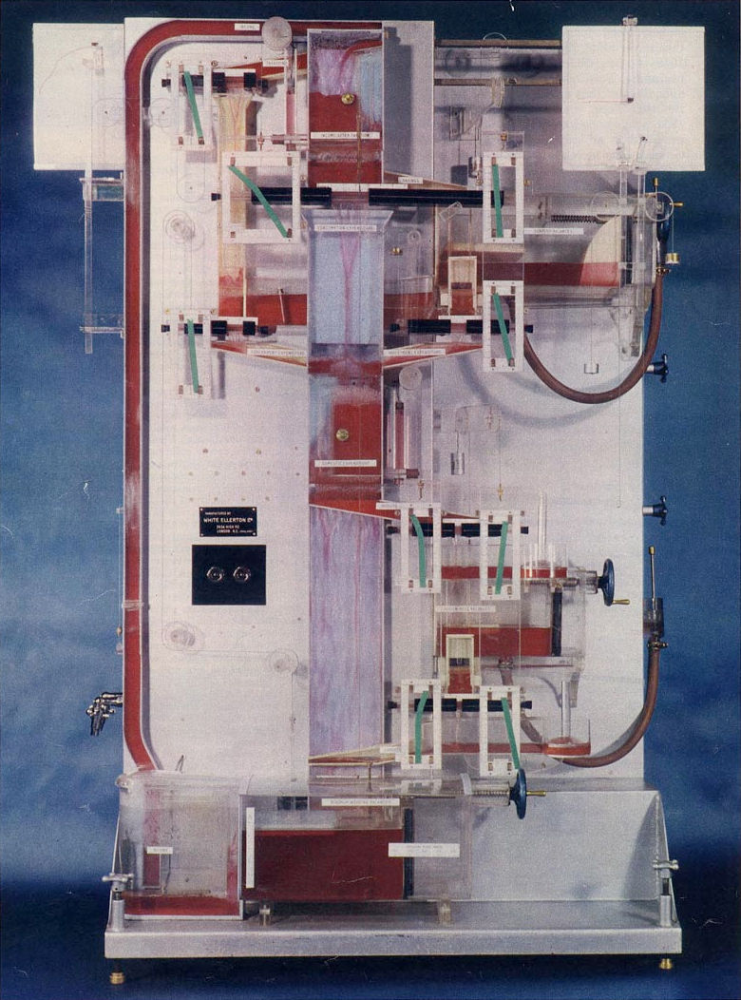
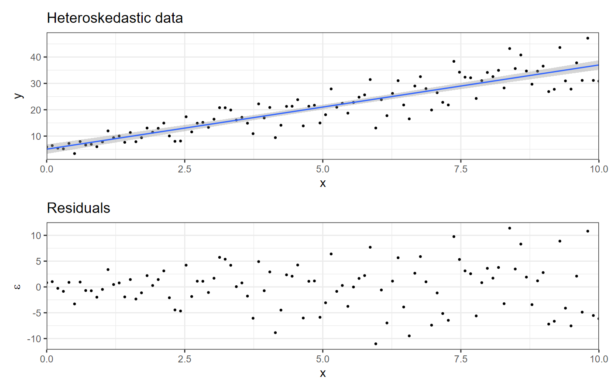
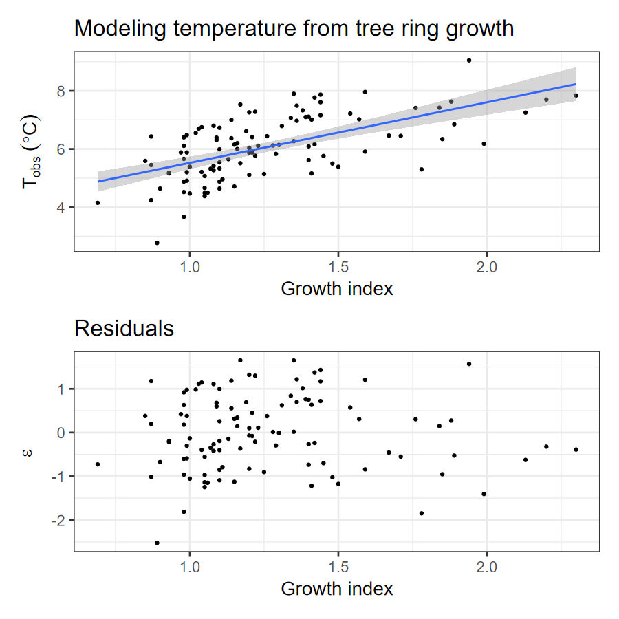

MONIAC: A physical model of the British national economy
(Photo: Wm. Vandivere, Fortune, March 1952, p. 100)
A model is a purposeful, simplified representation of reality
Modeling is something we do all the time because we never have enough data, time, and resources to represent every detail.
“Without models, there are no data.”
Without models, there are no [climate] data. … I mean this literally. Today, no collection of signals or observations … becomes global in time and space without first passing through a series of data models. … Everything we know about the world’s climate—past, present, and future—we know through models.
— Paul N. Edwards, A Vast Machine (MIT Press, 2010).
Mathematical formulation
\[X \sim \mathcal{D}(\Theta)\]
\(X\) represents observations, and the model says they are drawn from a statistical distribution \(\mathcal{D}(\Theta)\), with parameters \(\Theta\).
Observations:
Statistical Model:
\[ \begin{align} Y =& f(X) + \varepsilon \\ \varepsilon \sim& \mathcal{N}(0, \sigma) \end{align} \]
Predictions:
Predict what \(Y\) should be for the new \(X\):
\[ E(Y | X) = f(X) \]
Special case: Linear Regression
\[ E(y_i|x_{i,j}) = f(x_{i,j}) = \beta_0 + \sum_{j = 1}^p \beta_j x_{i,j} \]
Paleoclimate data: from T.J. Porter et al., Quaternary Res. 80, 167 (2013), DOI: 10.1016/j.yqres.2013.05.004.
Load the data:
## Rows: 763
## Columns: 3
## $ year_ad <dbl> 1245, 1246, 1247,…
## $ t_obs <dbl> NA, NA, NA, NA, N…
## $ growth_index <dbl> 1.41, 1.00, 1.17,…Estimate Model
##
## Call:
## lm(formula = t_obs ~ growth_index, data = paleo, na.action = na.exclude)
##
## Residuals:
## Min 1Q Median 3Q Max
## -2.52464 -0.62025 -0.03916 0.66740 1.65240
##
## Coefficients:
## Estimate Std. Error t value Pr(>|t|)
## (Intercept) 3.4417 0.3516 9.789 < 2e-16 ***
## growth_index 2.0820 0.2706 7.694 8.52e-12 ***
## ---
## Signif. codes: 0 '***' 0.001 '**' 0.01 '*' 0.05 '.' 0.1 ' ' 1
##
## Residual standard error: 0.8676 on 104 degrees of freedom
## (657 observations deleted due to missingness)
## Multiple R-squared: 0.3627, Adjusted R-squared: 0.3566
## F-statistic: 59.2 on 1 and 104 DF, p-value: 8.517e-12Predictions
Residuals are the differences between predictions \(\hat{y}_i\) and observed \(y_i\):
\[ \begin{align} y_i =& \hat{y}_i + \varepsilon_i \\ \hat{y}_i =& \beta_0 + \beta_1 x_i \\ \varepsilon_i =& y_i - \hat{y}_i \end{align} \]
Residual testing:

p1 <- ggplot(paleo_res, aes(x = growth_index, y = t_obs)) +
geom_point() +
geom_smooth(method = "lm") +
labs(x = "Growth index", y = expression(T[obs]~(degree * C)),
title = "Modeling temperature from tree ring growth")
p2 <- ggplot(paleo_res, aes(x = growth_index, y = res)) +
geom_point() +
labs(x = "Growth index", y = expression(epsilon),
title = "Residuals")
p1 / p2
Basic Model:
\[ \begin{align} y_i =& \beta_0 + \beta_1 x_i + \varepsilon_i \\ \overline{y} =& \frac{1}{N} \sum_{i = 1}^N y_i~(\text{mean}) \\ \hat{y}_i =& \beta_0 + \beta_1 x_i~(\text{prediction})\\ \varepsilon_i =& y_i - \hat{y}_i~(\text{error}) \end{align} \]
Mean Squared Error (MSE):
\[ S_\varepsilon^2 = \frac{1}{N - 2} \sum_{i = 1}^N \varepsilon_i^2 \]
Sums of Squares:
\[ \begin{align} \text{Total:}~\mathrm{SST} =& \sum_{i = 1}^N (y_i - \overline{y})^2 \\ \text{Regression:}~\mathrm{SSR} =& \sum_{i = 1}^N (\hat{y}_i - \overline{y})^2 \\ \text{Error:}~\mathrm{SSE} =& \sum_{i = 1}^N (y_i - \hat{y}_i)^2 = \sum_{i = 1}^N \varepsilon_i^2 \\ \mathrm{SSE} =& SST - SSR \\ S_\varepsilon^2 =& \frac{1}{N-2} SSE = \frac{1}{N - 2} (\mathrm{SST} - \mathrm{SSR}) \end{align} \]
Summary:
\[\begin{align} \mathrm{SST} =& \mathrm{SSR} + \mathrm{SSE} \\ \mathrm{SST} =& (N - 1) \times \text{total variance in } y \\ \mathrm{SSR} =& (N - 1) \beta_1^2 \times \text{total variance in } x \\ \mathrm{SSE} =& \text{sum of squared residuals} \end{align}\]
ANOVA Table
| Source | df | SS | MS | F |
|---|---|---|---|---|
| Total | \(N - 1\) | \(\mathrm{SST}\) | ||
| Regression | \(1\) | \(\mathrm{SSR}\) | \[\mathrm{MSR} = \frac{\mathrm{SSR}}{1} \] | \[ \frac{\mathrm{MSR}}{\mathrm{MSE}} \] |
| Residuals | \(N - 2\) | \(\mathrm{SSE}\) | \[\mathrm{MSE} = \frac{\mathrm{SSE}}{N - 2} = S_\varepsilon^2\] |
Mean squared error
\[ MSE = S_\varepsilon^2 = \frac{1}{N-2} \mathrm{SSE} \]
Coefficient of Determination \(R^2\)
\[ R^2 = \frac{\mathrm{SSR}}{\mathrm{SST}} = 1 - \frac{\mathrm{SSE}}{\mathrm{SST}} \]
\(R^2\) measures the fraction of the total variance explained by the regression model
\(F\) ratio:
\[ F = \frac{\mathrm{MSR}}{\mathrm{MSE}} \]
paleo_res |> summarize(
SST = sum( (t_obs - mean(t_obs))^2 ),
SSR = sum( (t_pred - mean(t_obs))^2 ),
SSE = sum(res^2),
R_squared = SSR / SST
)## # A tibble: 1 × 4
## SST SSR SSE R_squared
## <dbl> <dbl> <dbl> <dbl>
## 1 123. 44.6 78.3 0.363As expected, \(\mathrm{SST} = \mathrm{SSR} + \mathrm{SSE}\).
R lets us generate an ANOVA table automatically:
Statistical and Systems Models
Systems model: tree-ring growth depends on temperature, soil moisture, …
\[ \text{growth} = f(T, M, \ldots) \]
The dependence is approximately linear near some reference values
\[ \begin{align} \text{growth}\: =&\: \alpha_0 + \alpha_T (T - T_0) + \\ &\: \alpha_M (M - M_0) + \ldots \end{align} \]
Statistical model
\[ \begin{align} \text{growth}\: =&\: \alpha_0 + \alpha_T (T - T_0) + \ldots \\ T =&\: T_0 + \frac{1}{\alpha_T} (\text{growth} - \alpha_0 - \ldots) \\ =&\:\beta_0 + \beta_g\, \text{growth} + \varepsilon, \end{align} \]
where \(\varepsilon\) represents all the terms in the real system that we’re ignoring.